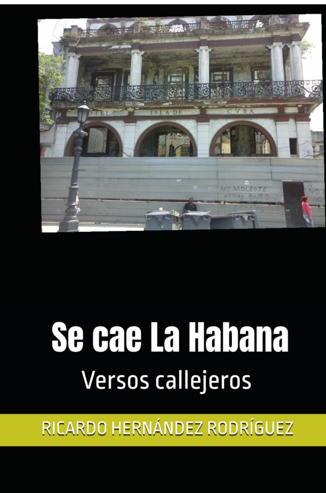
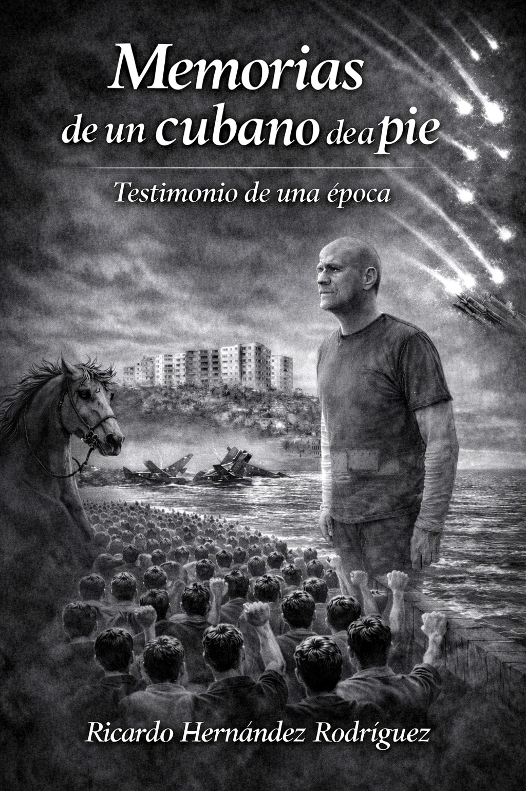

Biografía
Maestro de profesión, es Licenciado en Pedagogía con especialidad en Química por el Instituto Superior Pedagógico Enrique José Varona (La Habana, Cuba). Inició su vida laboral como profesor de Química en la Escuela Secundaria Básica del Reparto Habana del Este.La Habana. Posteriormente, los caminos de la vida lo llevaron a desempeñarse en distintas ramas de la esfera económica, vinculadas principalmente a los recursos humanos.
Ha realizado estudios de posgrado en FORMATUR (Cuba), la Universidad de La Salle (México) y la Universidad Católica de Santo Domingo (República Dominicana).
Es autor del poemario"Se Cae La Habana. Versos Callejeros". y los libros"Cuentos de suspense, amor y muerte" y "Memorias de un cubano de a pie".
Se cae La Habana. Versos callejeros
La segunda edición de Versos callejeros de Ricardo Hernández Rodríguez escribe desde la memoria, pero no vive prisionero de ella. Sus versos nacen de la observación, de la experiencia, de la indignación, de la nostalgia y, sobre todo, de una necesidad: decir. Decir aquello que le duele, aquello que cuestiona, aquello que recuerda, aquello que ama y lo que todavía espera.

📖 Abrir el libro Kindle en Amazon
📚 Comprar el libro de tapa blanda en Amazon
💬 Tu opinión es importante. Deja un comentario
Poemas de amor
El amor tiene muchas voces: la del encuentro y la despedida, la de la pasión y la ternura, la de la ausencia y el recuerdo. En este espacio conviven mis versos con los de otros autores que han encontrado en la poesía una manera de expresar aquello que a veces las palabras cotidianas no alcanzan a decir.
Una selección abierta a distintas sensibilidades y maneras de sentir, donde cada poema nos invita a descubrir una nueva forma de mirar el amor.
Próximamente, nuevos poemas.
💬 Tu opinión es importante. Deja un comentario
Próximamente
Este espacio estará dedicado a un nuevo poema. Próximamente podrás disfrutar aquí de otra obra de Ricardo Hernández Rodríguez.
En preparación.
💬 Tu opinión es importante. Deja un comentario
Próximamente
En este espacio encontrarás próximamente otro poema de Ricardo Hernández Rodríguez.
En preparación.
💬 Tu opinión es importante. Deja un comentario
Próximamente
Este espacio estará reservado para una nueva obra de Ricardo Hernández Rodríguez.
En preparación.
💬 Tu opinión es importante. Deja un comentario
Cuentos de suspense, amor y muerte
Historias de suspense, amor y muerte que exploran las pasiones humanas, los conflictos y los enigmas de la vida.
Este espacio estará reservado a mi libro Cuentos de suspense, amor y muerte, de Ricardo Hernández Rodríguez.
💬 Tu opinión es importante. Deja un comentario
Las sombras de la culpa
Una obra dedicada a explorar los conflictos humanos, las decisiones que marcan nuestras vidas y las huellas que deja el pasado.
Este espacio estará reservado a mi libro Las sombras de la culpa, de Ricardo Hernández Rodríguez.
💬 Tu opinión es importante. Deja un comentario
Otros cuentos
Un espacio para compartir relatos independientes que invitan a descubrir historias, personajes y emociones.
Aquí publicaré algunos de mis cuentos, seleccionados para compartirlos con los lectores de Ricardo Hernández Letras.
💬 Tu opinión es importante. Deja un comentario
xxxxx
xxxx.
Memorias de un cubano de a pie
Memorias de un cubano de a pie. Testimonio de una época
Es un recorrido autobiográfico por la vida de su autor y, a través de sus experiencias, por la historia de una Cuba marcada por profundas transformaciones políticas, sociales y humanas. Desde la perspectiva de quien ha vivido los acontecimientos, estas páginas rescatan recuerdos, vivencias y reflexiones que contribuyen a comprender una época y sus huellas en la vida de las personas.

📖 Leer la edición Kindle en Amazon
📚 Comprar la edición de tapa blanda en Amazon
💬 Tu opinión es importante. Deja un comentario
Se cae La Habana
Una canción de denuncia que convierte el deterioro de La Habana en metáfora de la decadencia de un país. Con ironía y lenguaje directo, Rihero retrata una realidad en la que los escombros, los baches y las viejas promesas forman parte del mismo paisaje.
Letra y melodía: Ricardo Hernández Rodríguez (Rihero).
Musicalización: Suno AI.
▶ Escuchar «Se cae La Habana» en YouTube
💬 Tu opinión es importante. Deja un comentario
Distopía
▶ Escuchar «Distopía» en YouTube
Una visión sombría de una sociedad en la que la libertad, la dignidad y las esperanzas individuales quedan atrapadas bajo el peso de un sistema opresivo. Con la fuerza del rock latino sinfónico, la canción transforma la denuncia en una experiencia musical intensa y cinematográfica.
💬 Tu opinión es importante. Deja un comentario
Once de julio

▶ Escuchar «Once de julio» en YouTube
Inspirada en las históricas protestas populares del 11 de julio de 2021 en Cuba, esta canción rinde homenaje a quienes salieron a las calles para reclamar libertad y expresar su inconformidad. Un testimonio musical de una jornada que marcó la historia reciente de la isla y permanece en la memoria de su pueblo.
💬 Tu opinión es importante. Deja un comentario
Confesión
▶ Escuchar «Confesión» en YouTube
Una canción romántica en la que los sentimientos encuentran su propia voz. Entre la intimidad y el deseo de sinceridad, el protagonista expresa aquello que guarda en el corazón y que necesita revelar. Una confesión de amor que convierte las emociones más profundas en música.
💬 Tu opinión es importante. Deja un comentario
Ladrona

▶ Escuchar «Ladrona» en YouTube
Una historia de amor en la que la pasión puede convertirse en una prisión. La canción juega con la imagen de quien roba un corazón y termina ejerciendo un dominio absoluto sobre los sentimientos, convirtiendo el enamoramiento en una cautividad de la que resulta difícil escapar.
💬 Tu opinión es importante. Deja un comentario
Pandemia de amor
Este espacio queda preparado para la canción, su letra y el enlace para escucharla cuando esté terminada.
💬 Tu opinión es importante. Deja un comentario
Comentarios
Déjame tu opinión o comentario sobre los poemas y cuentos publicados en este sitio. Tus palabras son bienvenidas y ayudan a mantener vivo este espacio literario.
Contacto
Escríbenos a: ricardohernandezletras@gmail.com